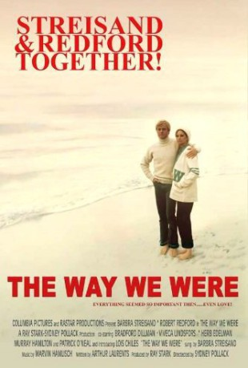
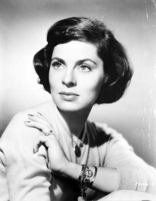
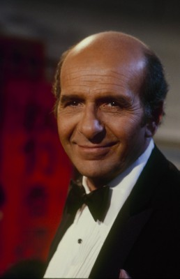

#4249 So wie wir waren - Jene Jahre in Hollywood
Alternativ: The Way We Were
Auszeichnungen: 2 Oscars gewonnen für 4 Oscars nominiert 1 GoldenGlobes gewonnen
 
 IMDB-Wertung: 7.1 / 10
IMDB-Wertung: 7.1 / 10  Metascore: 0
Metascore: 0 
The often unlikely joint lives of Katie Morosky and Hubbell Gardiner from the late 1930s to the late 1950s is presented, over which time, they are, in no particular order, strangers, acquaintances, friends, best friends, lovers and adversaries. The unlikely nature of their relationship is due to their fundamental differences, where she is Jewish and passionate about her political activism both in political freedoms and Marxism to an extreme where she takes life a little too seriously, while he is the golden boy WASP, being afforded the privileges in life because of his background but who on the most part is able to capitalize on those privileges. Their lives are shown in four general time periods, in chronological order when they attend the same college, their time in New York City during WWII, his life as a Hollywood screenwriter post-war, and his life as a writer for a New York based live television show. It is during college that Hubbell finds his voice in life as a writer, and ...
Jahr: 1973
Dauer: 118 Minuten
FSK: 12
Land: USA Studio: ColumbiaTonspuren: DD5.1 - ,
Untertitel: Deutsch,
Auflösung: 1080p (1920x800) Größe: 8949 MB
Genre: Drama, Liebe
Regisseur:  Sydney Pollack
Sydney Pollack
Drehbuch: Mathieu Urfer
Soundtrack:
Darsteller:
 Barbra Streisand als Katie
Barbra Streisand als Katie Robert Redford als Hubbell
Robert Redford als Hubbell Bradford Dillman als J. J.
Bradford Dillman als J. J. Lois Chiles als Carol Ann
Lois Chiles als Carol Ann Patrick O'Neal als George Bissinger
Patrick O'Neal als George Bissinger-  Viveca Lindfors als Paula Reisner
 Allyn Ann McLerie als Rhea Edwards
Allyn Ann McLerie als Rhea Edwards Murray Hamilton als Brooks Carpenter
Murray Hamilton als Brooks Carpenter-  Herb Edelman als Bill Verso
- Diana Ewing als Vicki Bissinger
 Sally Kirkland als Pony Dunbar
Sally Kirkland als Pony Dunbar- Marcia Mae Jones als Peggy Vanderbilt
 Don Keefer als Actor
Don Keefer als Actor George Gaynes als El Morocco Captain
George Gaynes als El Morocco Captain Roy Jenson als Army Captain
Roy Jenson als Army Captain James Woods als Frankie McVeigh
James Woods als Frankie McVeigh- Constance Forslund als Jenny
- Robert Gerringer als Dr. Short
- Susan Blakely als Judianne
- Edward Power als Airforce
 Sean Collins als Army Corporal , uncredited
Sean Collins als Army Corporal , uncredited- Marvin Hamlisch als Guest at Movie Screening , uncredited
 R.C. Keene als College student , uncredited
R.C. Keene als College student , uncredited- Cornelia Sharpe als Girl at Party , uncredited
- Eric Boles als Army Corporal
- Barbara Peterson als Ashe Blonde
 Brendan Kelly als Rally Speaker
Brendan Kelly als Rally Speaker- Susanne Zenor als Dumb Blonde
 Dan Seymour als Guest
Dan Seymour als Guest- Dorian Cusick als Professor's Wife , uncredited
- Robert Dahdah als Officer Passing Plaza , uncredited
- Beverly Goodman als Young Lady Pedestrian , uncredited
- Don Koll als Officer Dining , uncredited
- Bruce Pecheur als Party Guest , uncredited
- Andrea True als Extra , uncredited
Datei: X:\1973\So wie wir waren - Jene Jahre in Hollywood (1973, FSK12, 1920x800).mkv seit 26.08.2016
Festplatte: HD 1971-1979
 Es gibt insgesamt 30 Filme in der Gruppe '1973'
Es gibt insgesamt 30 Filme in der Gruppe '1973'